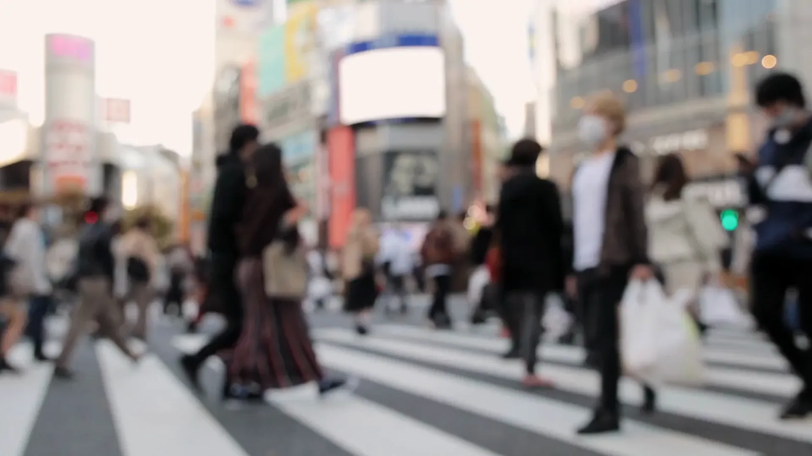
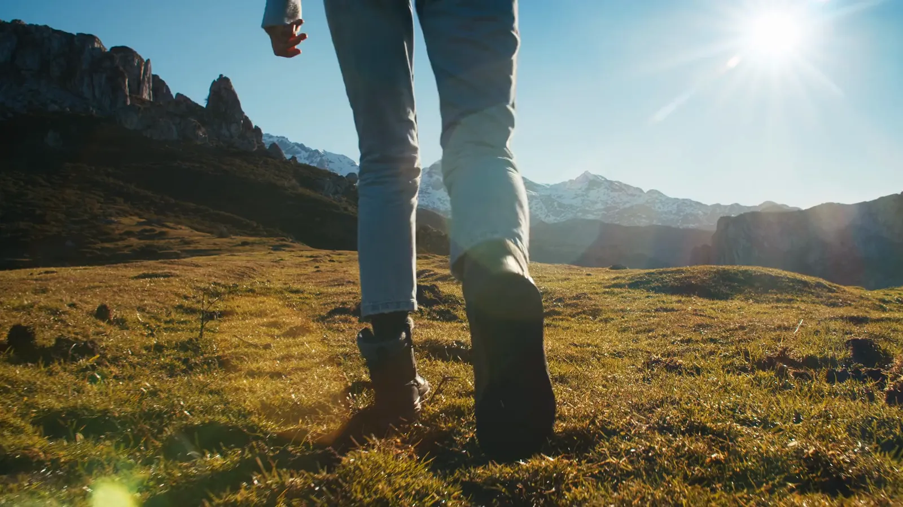
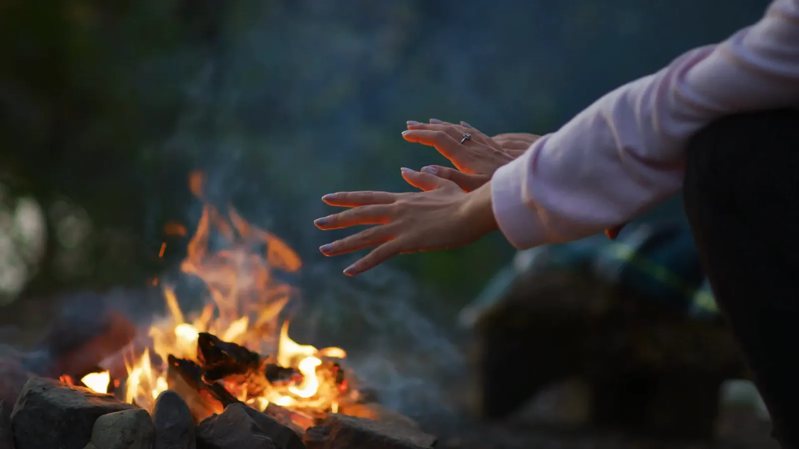
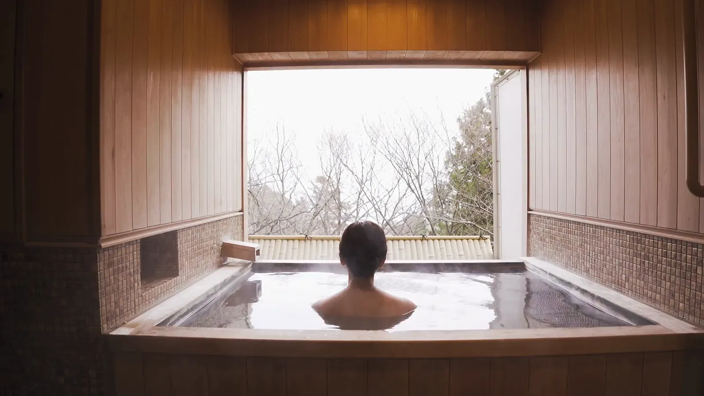

ちょっと、
寄り道しませんか。
スクロールするたび、旅がひとつ進みます。行き先は、まだ誰も知りません。
いつもの交差点。
今日は、まっすぐ帰らない。
一歩目は、
だいたい草の上。
地図はいりません。靴ひもだけ、結んでおいてください。
この景色のために、
ここまで来た。
アイスランド西部、キルキュフェトル山。この夕陽は、写真では持ち帰れません。
夜は、火を囲んで
知らない人と話す。
旅の終わりは、
湯けむりの向こうで。
歩きつかれた足を、あたたかいお湯でほどきます。
次は、あなたの寄り道を。
行き先が決まっていなくても大丈夫です。気になった景色をひとつ、教えてください。
寄り道スタンプ 0/7 旅の相談をする このサイトは制作サンプルです。よりみち旅行社は架空の会社です。